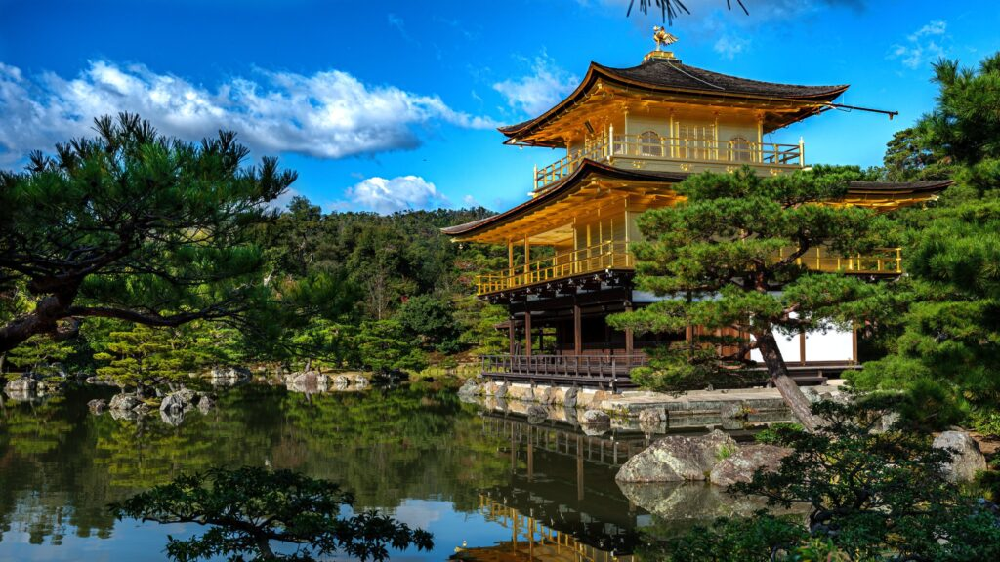
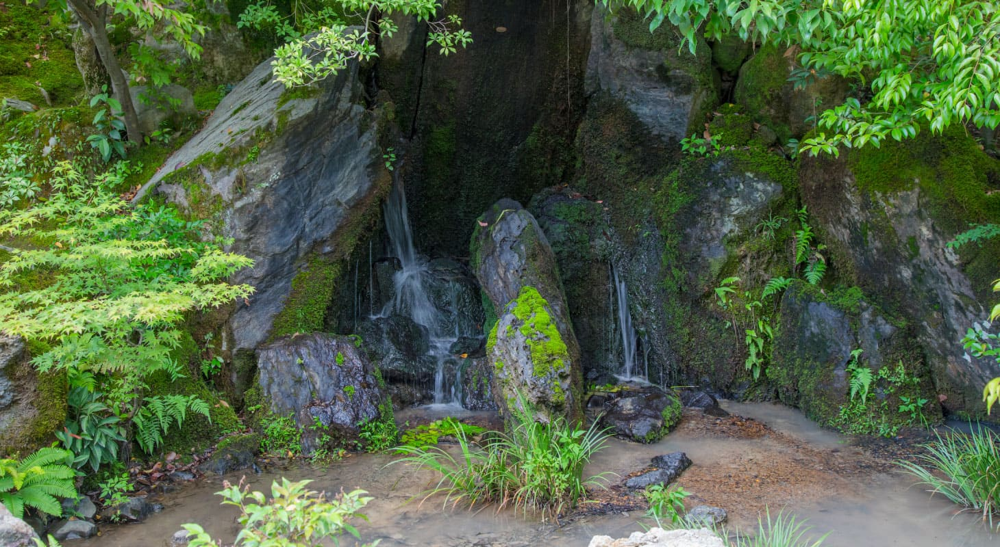
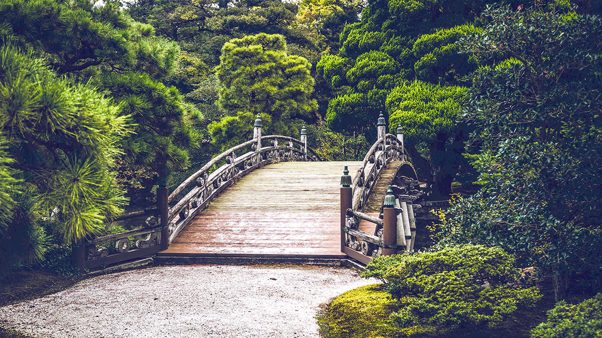
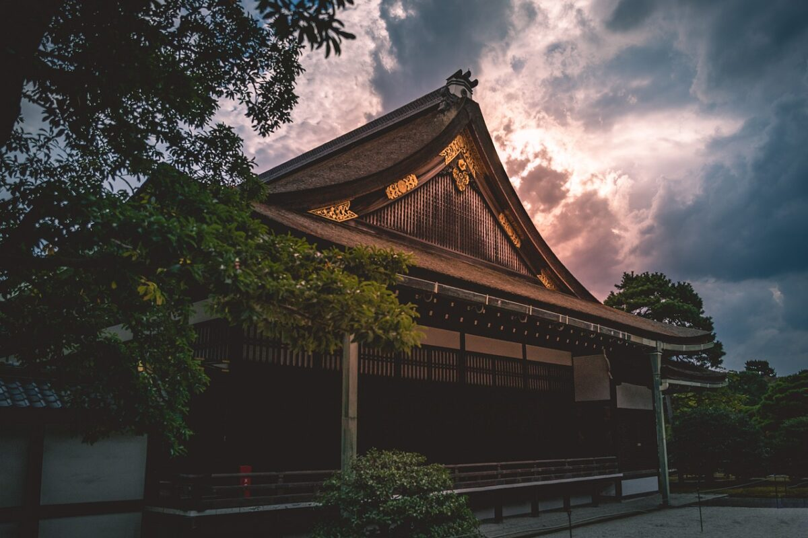
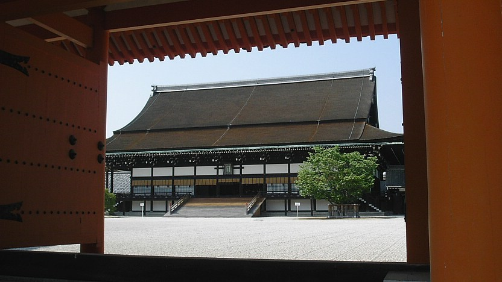

Kinkakuji (Golden Pavilion)
Kinkaku-ji is located in Kinkakuji-cho, Kita-ku, in the northwester corner of Kyoto. It is a beautiful area, with the mountains Kinugasayama to the west and Hidari Daimonjiyama behind it. The range of mountains running along the northern part of Kyoto is known as Kitayama, but the area around Kinkaku-ji is sometimes referred to as Hokuzan, an alternative pronunciation of the characters used to write Kitayama. This name can be traced back to the Heian period (794-1185), and at that time was used to distinguish the larger area (Kitayama) extending north into Kyoto Prefecture from the smaller (Hokuzan) area close to Kinkaku-ji.
Its famous Golden Pavilion (Kinkaku)—actually a pagoda made to house the sacred relics of the Buddha—has given this temple the popular name of Kinkaku-ji (“Temple of the Golden Pavilion”), however the official name of this branch temple of the Rinzai-sect Zen temple of Shokoku-ji is Rokuon-ji. The temple was designated as a UNESCO World Heritage Site in 1994.
During the Kamakura period (1185-1333), this land was the site of a villa of the aristocrat Saionji Kintsune, known as Kitayamadai. During the Muromachi period (1392-1573), however, it caught the attention of the third Ashikaga shogun Yoshimitsu (1358-1408), who took over the site from the Saionji family in order to build his own villa, which he called Kitayamadono. This complex, whose gardens and architecture focused around a central Golden Pavilion, was said to evoke paradise on earth and was the destination of such esteemed visitors as Emperor Gokomatsu (r. 1392-1412), father of the Zen priest Ikkyû. The estate also became the center of the so-called “Kitayama culture,” which was central in importing various aspects of Ming-dynasty Chinese culture into Japanese society, thanks to increased trade relations with Japan’s continental neighbor.
Address: 1 Chome-294 Kiyomizu, Higashiyama Ward, Kyoto, 605-0862
Official Site: www.kiyomizudera.or.jp/en/
Gallery




